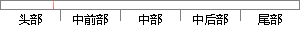

复位 RESET 1 管理模式 0x00000000
片段位置图

相似结果
相似片段：表 2.1 ARM体系中的异常中断 Table 2.1 Interrupt of ARM System 异常类型 向量地址 优先级 进入模式 异常中断含义 复位 Reset 0x00000000 1 管理模式 当处理...
| 标题 | 《基于嵌入式LINUX下软键盘的设计》 |
| 对比库 | 中国学位论文全文数据库 |
| 作者 | 范世琦 |
| 机构 | 河北工业大学 |
| 分类 | 计算机应用技术 |
| 年份 | 2006 |
| 相似率 | 76.19% （轻度抄袭） |